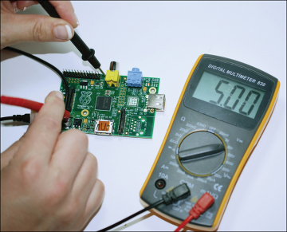
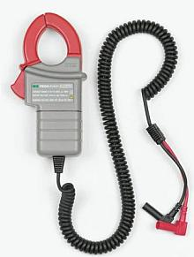
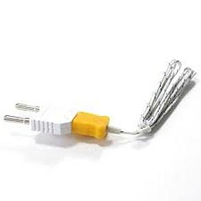
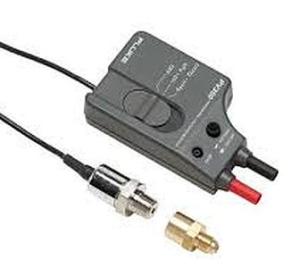
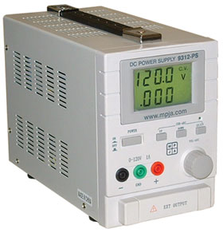

Measurements
Bits and Bytes

|
Binary digit (bit) is the smallest element of computer storage. Logically it is a single digit in a binary number
(0 or 1).
The bit is physically a transistor or capacitor in a memory cell, a magnetic domain on disk or tape, a
reflective spot on optical media or a high or low voltage pulsing through a circuit.
A block of bits make up storage units in the computer, called characters, bytes, or words, which are manipulated as a block and the storage devices are often called block storage devices.
The most common is the byte, made up of eight bits and equivalent to one alphanumeric character.
Bits are widely used as a measurement for transmission. Ten megabits per second means that ten million pulses are transmitted per second.
A 16-bit bus means that there are 16 wires transmitting the bit at the same time.
Measurements for storage devices, such as disks, files and databases, are given in bytes rather than bits.
|
Bits/bytes 2 ^10 = 2 to the power of 10 = 1024
Kilo (K) Thousand 2 ^10 = 1024 bytes ( 4 digit number)
Mega (M) Million 2 ^20 = 1048576 bytes ( 7 digit)
Giga (G) Billion 2 ^ 30 (10 digit)
Tera (T) Trillion 2 ^ 40 (13 digit)
Peta (P) Quadrillion 2 ^ 50 (16 digit)
Exa (E) Quintillion 2 ^ 60 (19 digit)
Zetta (Z) Sextillion 2 ^ 70 (22 digit)
Yotta (Y) Septillion 2 ^ 80 (25 digit)
TIME - Fraction of second Power of 10
Millisecond (ms) Thousandth -3
Microsecond (qs) Millionth -6
Nanosecond (ns) Billionth -9
Picosecond (ps) Trillionth -12
Femtosecond (fs) Quadrillionth -15
Attosecond (as) Quintillionth -18
Zeposecond (zs) Sextillionth -21
Yoctosecond (ys) Septillionth -24
Storage/channel capacity measured in:
CPU word size bits
Bus size bits
Disk, tape bytes
Overall memory capacity bytes
SIMM and DIMM modules bytes
Individual memory chip bits
Transmission speed measured in:
Network line/channel bits/sec
Disk transfer rate bytes/sec
Disk access time ms
Memory access time ns
Machine cycle us, ns
Instruction execution us, ns
Transistor switching ns, ps, fs
MHz
(MegaHertZ) One million cycles per second. It is used to measure the transmission speed
of electronic devices, including channels, buses and the computer's internal clock. Megahertz is generally equivalent
to one million bits per second or to one million times some number of bits per second.
When it refers to the computer's clock, it is used to measure the speed of the CPU. For example, a 133MHz Pentium
processes data internally (calculates, compares, copies) twice as fast as a 66MHz Pentium. However, this does not
mean twice as much finished work gets done in the same time frame, because cache design, disk speed and software
design all contribute to the computer's actual performance, not just CPU speed.
When referencing CPU speed, the megahertz rating is really the heartbeat of the computer,
providing the raw, steady pulses that energize the circuits. The word "Hertz," in German means heart. It is used to measure changes in seconds.

In the image above, the MegaHertz Speed Limit MegaHertz is analogous to a highway speed limit.
The higher the speed, the faster the traffic moves. In a CPU, the higher the clock rate, the quicker data gets processed.
The 16, 32, 64 bit designation is the CPU's word size and can be thought of as the number of lanes on the
highway. The more lanes, the more traffic. The combination of speed and number of paths determines the total processing
speed or channel bandwidth.
Measurement Tools
There are many tools that can be used to take measurements. The most commonly used are the multimeter and the oscilloscope.
DMM
   
A multimeter can be a hand-held device useful for basic fault finding and field service work, or a bench instrument which can measure to a very high degree of accuracy. They can be used to troubleshoot electrical problems in a wide array of industrial and household devices such as electronic equipment, motor controls, domestic appliances, power supplies, and wiring systems.
Contemporary multimeters can measure many values. The most common are:
- Voltage, alternating and direct, in volts.
- Current, alternating and direct, in amperes.
- Resistance in ohms.
Additionally, some multimeters also measure:
- Capacitance in farads, but usually the limitations of the range are between a few hundred or thousand micro farads and a few pico farads.
- Conductance in siemens, which is the inverse of the resistance measured.
- Decibels in circuitry, rarely in sound.
- Duty cycle as a percentage.
- Frequency in hertz.
- Inductance in henries.
- Temperature in degrees Celsius or Fahrenheit, with a thermocouple.
- Continuity tester; a buzzer sounds when a circuit's resistance is low enough.
- Diodes (measuring forward drop of diode junctions).
- Transistors (measuring current gain and other parameters in some kinds of transistors).
- Battery checking for simple 1.5 V and 9 V batteries. This is a current-loaded measurement.
Various sensors can be attached to (or included in) multimeters to take measurements such as:
- Light level
- Sound pressure level
- Acidity/alkalinity(pH)
- Relative humidity
- Very small current flow (down to nanoamps with some adapters)
- Very small resistances (down to micro ohms for some adapters)
- Large currents — which use inductance (AC current only) or Hall effect sensors (both AC and DC current), usually through insulated clamp jaws to avoid direct contact with high current capacity circuits which can be dangerous, to the meter and to the operator.
- Very high voltages — which form a voltage divider with the meter's internal resistance, allowing measurement into the thousands of volts. However, very high voltages often have surprising behavior, aside from effects on the operator (perhaps fatal). High voltages which actually reach a meter's internal circuitry may internal damage parts, perhaps destroying the meter or permanently ruining its performance.
Oscilloscope

An oscilloscope, informally known as a scope or o-scope, CRO (for cathode-ray oscilloscope), or DSO (for the more modern digital storage oscilloscope), is a type of electronic test instrument that allows observation of varying signal voltages, usually as a two-dimensional plot of one or more signals as a function of time. Other signals (such as sound or vibration) can be converted to voltages and displayed.
Oscilloscopes are used to observe the change of an electrical signal over time, such that voltage and time describe a shape which is continuously graphed against a calibrated scale. The observed waveform can be analyzed for such properties as amplitude, frequency, rise time, time interval, distortion and others. Modern digital instruments may calculate and display these properties directly. Originally, calculation of these values required manually measuring the waveform against the scales built into the screen of the instrument.
The oscilloscope can be adjusted so that repetitive signals can be observed as a continuous shape on the screen. A storage oscilloscope allows single events to be captured by the instrument and displayed for a relatively long time, allowing observation of events too fast to be directly perceptible.
Bench Power Supply Unit
 
A bench power supply unit refers to a device you plug into a standard AC wall outlet to supply accurate adjustable DC power for work bench testing electronic circuits. It works just like a systems power supply unit (seen on the right) but allows you to adjust the output power.
Next Page: Digital Logic